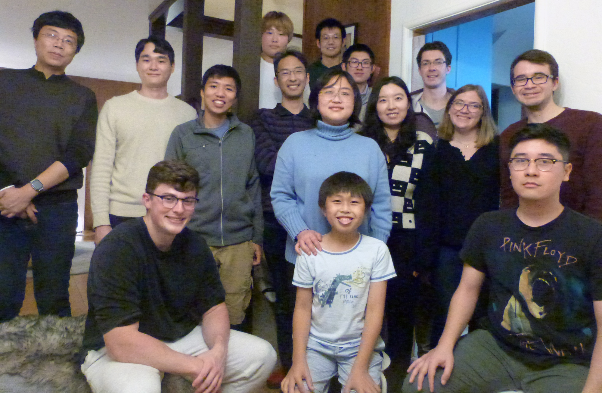

People
Principal Investigator
 Ke Xu Ke Xuxuk at berkeley.edu |
Ke Xu is an associate professor of Chemistry at UC-Berkeley. Ke received his B.S. from Tsinghua University, did Ph.D. work with Prof. Jim Heath at Caltech, and performed postdoctoral research with Prof. Xiaowei Zhuang at Harvard University. Ke joined UC-Berkeley in 2013. His current research develops new physicochemical tools to interrogate biological, chemical, and materials systems at the nanoscale with extraordinary resolution, sensitivity, and functionality. To this end, his lab takes a multidimensional approach that integrates advanced microscopy, spectroscopy, cell biology, and nanotechnology. Ke has been named a Sloan Research Fellow, a Packard Fellow for Science and Engineering, a Beckman Young Investigator, a Pew Biomedical Scholar, a Chan-Zuckerberg Biohub Investigator, and the C&EN Talented 12, and has received an NSF CAREER Award and an NIH Director's New Innovator Award. |
Postdoctoral Researchers & Research Scientists
| Wan Li wl285 at berkeley.edu |
Wan obtained her bachelor and master degrees in physics from Tsinghua University. She obtained her Ph.D. degree from Cornell University, where she worked with Prof. Dan Ralph on graphene electrochemistry and spintronics. After a brief postdoc in Prof. Jay Groves' lab at UC-Berkeley, where she integrated graphene with supported lipid bilayers, she joined Xu lab and is currently a Research Scientist. She currently works on the optical characterization and chemistry of 2D materials, as well as their integration with biological samples. |
| Changdong He hecd at berkeley.edu |
Changdong obtained his bachelor degree and Ph.D. degree from Peking University. He joined Ke Xu group in Fall 2021. Changdong did his Ph.D. research with Prof. Suwei Dong where he investigated the glycopeptide assembly and glycoprotein phase separation. His current interests involve investigating protein phase separation using super-resolution microscopy in vitro and in vivo. |
| Collin Steen collin.steen at berkeley.edu |
Collin graduated from Kalamazoo College in 2017 with a B.A. in chemistry and a concentration in biological physics. He completed a Ph.D. in chemistry at UC Berkeley with Prof. Graham Fleming in 2022, where he utilized various techniques in time-resolved laser spectroscopy to investigate the molecular mechanisms underlying photoprotection in intact plants and algae. As a postdoc in the Xu group, Collin’s current research interests center around imaging dynamic processes in intact biological systems with high spatial resolution. |
| Megan Steves msteves at berkeley.edu |
Megan graduated with a B.A. in Chemistry and Art History from Messiah College in 2017, and obtained her Ph.D. in Chemistry from The Pennsylvania State University in 2022. At Penn State, Megan worked with Prof. Ken Knappenberger to study the nonlinear optical properties and photophysics of 2D materials along with developing new methods for nonlinear optical microscopy. She joined the Xu lab in 2022, and is interested in the development of multidimensional super-resolution microscopy techniques and their application to biological systems. |
Graduate Students
| Alex Choi achoi45 at berkeley.edu |
Alex graduated from the Georgia Institute of Technology in Spring 2019 with a B.S. in Chemistry. Alex worked with Prof. Ronghu Wu in the Department of Chemistry and Biochemistry developing methods to study low-abundance glycoprotein using mass spectrometry. His current research interests are the development and application of microscopy techniques to study the physics of biological systems. |
| Tyler Jepson tyler_jepson at berkeley.edu |
Tyler did his undergraduate at Colorado State University where he worked under Dr. Jean Chung to study the interaction of bee venom proteins on synthetic membranes. He joined Xu Lab in 2021 and now pursues a Ph.D. in biophysics, utilizing super-resolution microscopy and single-molecule spectroscopy to study cellular membranes. |
| Sinyoung Jo syhu7948 at berkeley.edu |
Sinyoung graduated from the Penn State University in 2021 with a B.S. in Biochemistry and Molecular Biology. Sinyoung worked with Cremer’s lab, where she studied the bioinorganic chemistry of lipid bilayers, and with Bull’s lab, where she studied mushroom bacterial pathogens with phage therapy. Her current research interest is the high-resolution imaging of live cells. |
| Ayana Tabo atabo at berkeley.edu |
Ayana graduated from Trinity College with a B.S. in Chemistry, where she worked with Prof. Lindsey Hanson on the synthesis of epoxy-gold nanoparticle composites and their characterizations in terms of optical, thermal, and mechanical properties. She joined Xu Lab in 2023, and her current research interests center around nanoscale chemistry, including the application of super-resolution microscopy techniques to biological systems. | Bret Unger b.unger at berkeley.edu |
Bret graduated from West Chester University in 2018. Bret did his undergraduate research with Prof. Kurt Kolasinski where he investigated the formation of novel silicon nanostructures using electrochemical and laser-assisted processes. His current research interests include improving the capabilities of super-resolution microscopy as well as biological applications of super-resolution microscopy.
|
| Tong Zhan zhant19 at berkeley.edu |
Tong did her undergraduate at Tsinghua University, where she worked with Prof. Liang Ge to study the unconventional protein secretion pathway, and also with Prof. Wei Xie to study epigenomics in early embryonic development. She joined Xu Lab in 2023 and now pursues a Ph.D. in chemical biology with interests in using super-resolution microscopy to better understand protein transport. |
Undergraduates
| Chun Ying (Albert) Wu albertwu27069576 at berkeley.edu |
Albert is a chemical biology major in the College of Chemistry. He joined the group in the spring of 2022. |
Alumni
| Ha Park ha.park at berkeley.edu |
Ha was a graduate student in the Xu group from 2018 to 2023, focused on high-throughput single-molecule diffusivity measurements. He studied macromolecular diffusion behaviors in nanometer-sized meshwork structures, and established a convolutional neural network model that generates a correlative diffusion coefficient map from single-molecule fluorescence imaging. He is now a consultant at Boston Consulting Group in Seoul.
|
| Bowen Wang bowenwang.bioeng at berkeley.edu |
Bowen was a graduate student in the Xu group from 2017 to 2022. In the Xu group, he led the development of super-resolution microscopy methods and their application to nanoscale subcellular structures, including the discovery of two distinct forms of endoplasmic reticulum tubules in the mammalian cell. He is now an investor at Monolith Management, a tech-driven venture capital firm.
|
| Yunqi Li yunqili at berkeley.edu |
Yunqi was a graduate student in the Xu group from 2017 to 2022, where she led the development and application of interference reflection microscopy (IRM) for the label-free characterization of graphene to visualize its reactions and mechanical behaviors at the nanoscale. She is currently a Consultant at Bain & Company in China.
|
| Rui Yan rui.yan at berkeley.edu |
Rui was a graduate student in the Xu group from 2015 to 2021, focusing on the development of functional super-resolution microscopy and its applications in biophysics and cell biology. He also studied the mechanisms of intracellular membrane trafficking and cytoskeletal organization using various fluorescence microscopy techniques. Upon graduation, he moved to Boston for a Helen Hay Whitney postdoctoral fellowship in the lab of Dr. Clifford Tabin at Harvard Medical School, investigating embryonic gut patterning through quantitative live imaging. |
| Kun Chen |
Kun was a postdoc in the Xu Lab from 2017 to 2021, where he led the development of single-molecule displacement/diffusivity microscopy and excitation spectral fluorescence microscopy, and their applications in cell biology. Kun is starting his new lab at University of Electronic Science and Technology of China. |
| Limin Xiang |
Limin was a postdoc in the Xu Lab from Aug 2016 to Mar 2021. He developed single-molecule displacement/diffusivity mapping (SMdM) technique, extended spectral SMLM to surface systems, witnessed Ke’s tenure promotion, and became a father in the meantime. He is now professor at Wuhan University in China. Limin left the lab during the COVID-19 pandemic, and he hopes to come back to say a “true” goodbye to everyone soon in the future! |
| Jeongmin Kim |
Jeongmin was a postdoc in the Xu Lab from 2019 to 2020, where he led the development of oblique-plane single-molecule localization microscopy. Jeongmin is starting his new lab at Seoul National University [Link]. |
| Seonah Moon |
Seonah was a graduate student in the Xu group from 2014, and graduated in 2019 with her Ph.D. In the Xu group, her research focused on implementing new methods for spectrally-resolved super-resolution microscopy and applying them to biological systems. She also took part in a few graphene-related projects. She is now a Yield Engineer at Intel Corporation in Hillsboro, Oregon. |
| Meghan Hauser |
Meghan joined the Xu group in Fall 2013, graduated with her Ph.D. in 2017, and then briefly stayed as a postdoc. Her research focused on the development of correlative microscopy methods and the application of super-resolution microscopy to both biological and inorganic materials systems. She is now an analyst at the boutique consulting firm, Clark Street Associates, in Mountain View, where she works with companies in the technology industry to optimize their businesses. |
 Sam Kenny Sam Kenny |
Sam was a graduate student in the Xu group from 2013 to 2018. His research encompassed the development of multicolor super-resolution microscopy and image analysis methodologies, as well as their application to cellular membranes and other biological systems. He is now a data scientist at Faire, a San Francisco-based wholesale retail company. |
| Michal Wojcik |
Michal started his graduate studies as Prof. Xu's first student during the summer of 2013, and graduated with his Ph.D. in 2018. In the Xu Lab, he played a key role in the development and application of multiple novel microscopy techniques to biological and materials systems. He is currently a Life Sciences Specialist at L.E.K. Consulting in Los Angeles. |
| Doory Kim |
Doory was a postdoc in the Xu Lab from 2016 to 2017, where she extended spectrally resolved STORM to single-molecule reactions. She is starting her new lab at Hanyang University [Link]. |
| Leiting Pan |
Leiting Pan was a visting scholar in the Xu Lab from December 2015 to December 2016, where he led super-resolution microscopy work on erythrocytes. He is currently professor at Nankai Univerisity [Link]. |
| Zhengyang Zhang |
Zhengyang was a postdoc in the Xu Lab from 2014 to 2016, where he led the development of spectrally resolved STORM super-resolution microscopy. Zhengyang is now starting as a lecturer in the Department of Chemistry at Nanyang Technological University [Link]. |
Undergrad Alumni
| Franklin Aviles | Xuyan (Shirley) Chen |
Albert Chiu |
Manni He |
 Yennie Shyu Yennie Shyu |
Michael Xiong | Min (Helen) Yang | Zhiheng Zhao |